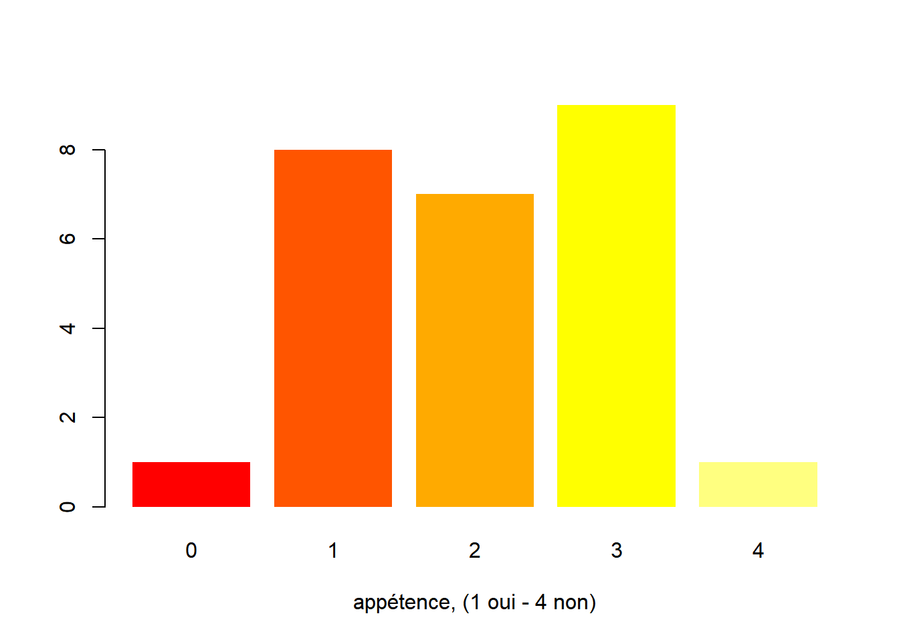
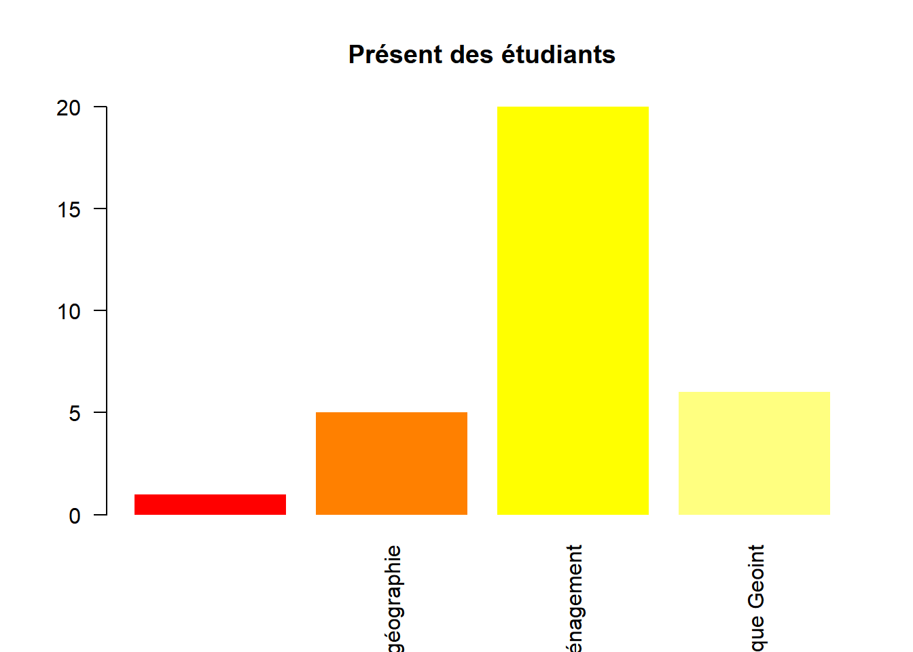
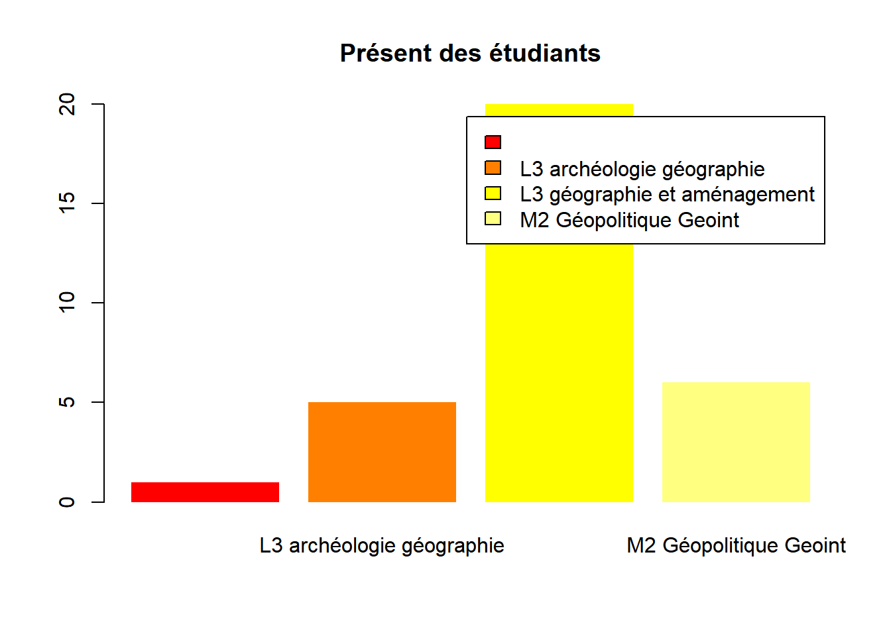
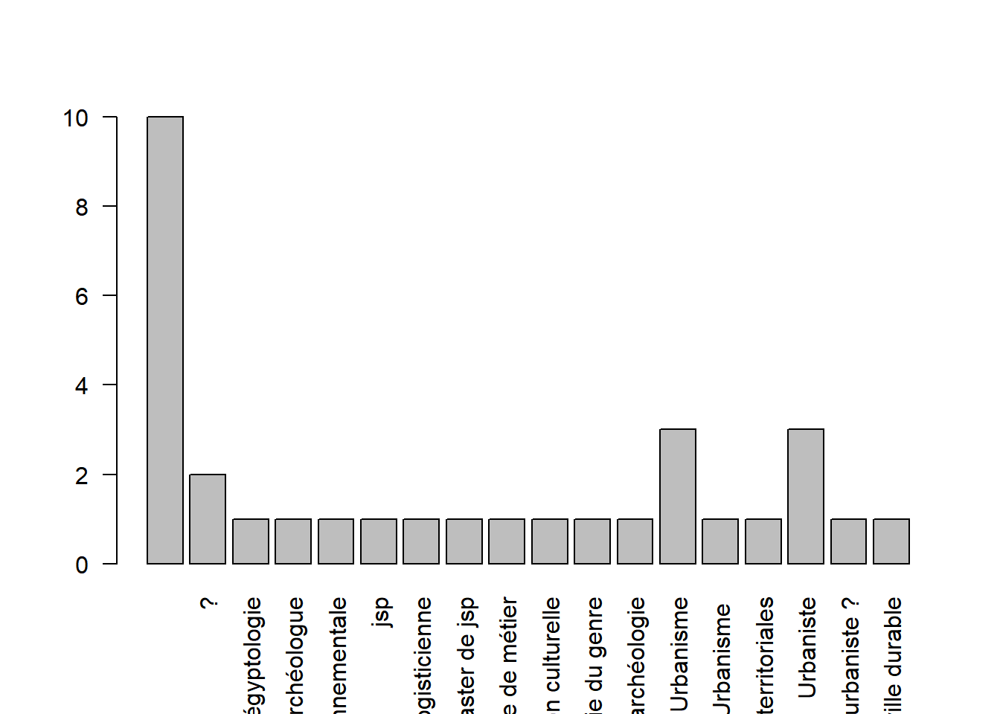

L6ECSIG Construction et utilisation des SIG 2021/22 (Gr. 6 Jeudi 18h - 20h Salle 217 sur le campus de Clignancourt)
L’idée du cours est de consolider les acquis de la L2 et de familiariser les étudiants à la création (géoréférencement, vectorisation, gdb, ArcGIS Collector) et à la valorisation des données (Webmap, Dashboards, StoryMaps).
Dans ce cours, au lieu d’utiliser les outils ArcGIS, on part sur R / git et OSM mais l’objectif reste le même.
data <- read.csv("data/deroule.csv", header =F, fileEncoding = "UTF-8")
knitr::kable(data)| V1 | V2 | V3 | V4 | V5 |
|---|---|---|---|---|
| num | date | thème | détail | évaluation |
| Cours 1 | 27/01/22 | environnement de travail | git | |
| Cours 2 | 03/02/22 | Markdown + structure projet | ||
| Cours 3 | 10/02/22 | bases | objets dans R : vecteurs et dataframe | |
| Cours 4 | 17/02/22 | Algo, boucles et fonctions | ||
| Cours 5 | 24/02/22 | intégrer des données spatiales : format gpkg | ||
| Cours 6 | 10/03/22 | Géotraitements | Eval 1 : DST | |
| Cours 7 | 17/03/22 | collecter des données | saisie sous OSM | |
| Cours 8 | 24/03/22 | valorisation | cartographie : symbologie | |
| Cours 9 | 31/03/22 | cartographie : mise en page | ||
| Cours 10 | 07/04/22 | leaflet : le webmapping | ||
| Cours 11 | 14/04/22 | le dashboard | Eval 2 : projet markdown | |
| Cours 12 | 12/05/2022 | révision : remarques sur les projets |
Notez au passage que la semaine avant les vacances de Pâques les L3 n’ont pas cours puisqu’ils sont en stage de terrain. Il faut donc compter 11 séances + 1 séance de révision.
régime du contrôle mixte,
Deux évaluations : un DST et un projet maison
Examen qui se tiendra dans les deux dernières semaines de mai à une date qui nous sera communiquée ultérieurement. Il s’agit là d’une évaluation individuelle sur machine d’une durée de 2h et qui comptera pour un coefficient 2.
Données sur la commune de Bondy, données OSM et internes + carroyage INSEE
La collecte des données ne se fait pas sur le terrain mais à partir de sources internes et sur openstreet map.
library(sf)## Linking to GEOS 3.9.0, GDAL 3.2.1, PROJ 7.2.1zone <- st_read("data/vote.gpkg", "zone", quiet = TRUE,stringsAsFactors = F)
resultat <- read.csv("data/bondyElection.csv", encoding = "UTF-8")cours1 <- read.csv("data/cours1.csv", fileEncoding = "UTF-8")
str(cours1)## 'data.frame': 32 obs. of 14 variables:
## $ Prénom : chr "Louis" "Gaëlle" "Anne" "Mariam" ...
## $ nom : chr "PERRAUD" "ROUSSEAU" "Simon" "Ouattara" ...
## $ adresse.mail : chr "louisperraud@orange.fr" "gaelle.e.m.rousseau@gmail.com" "annesimon94@sfr.fr" "moreliaivy@gmail.com" ...
## $ X44223 : chr "oui" "oui" "oui" "oui" ...
## $ passé : chr "archéologie-géographie" "L2 archéo-géographie" "Classe préparatoire Khâgne/Hypokhâgne Lakanal" "L2 Géographie et aménagement" ...
## $ présent : chr "L3 archéologie géographie" "L3 archéologie géographie" "L3 géographie et aménagement" "L3 géographie et aménagement" ...
## $ futur : chr "égyptologie" "SIG appliqué à l'archéologie" "Urbaniste" "logisticienne" ...
## $ appétence.codage..1.fort.4.mauvais: int 2 1 2 3 1 1 3 3 4 3 ...
## $ Niveau.de.codage.de.0.à.5 : int 0 0 0 1 NA NA 2 NA 1 0 ...
## $ X : logi NA NA NA NA NA NA ...
## $ X.1 : logi NA NA NA NA NA NA ...
## $ X.2 : logi NA NA NA NA NA NA ...
## $ X.3 : logi NA NA NA NA NA NA ...
## $ X.4 : logi NA NA NA NA NA NA ...tab <- table (cours1$appétence.codage..1.fort.4.mauvais)
barplot(tab, col = heat.colors(5), border = NA, xlab = "appétence, (1 oui - 4 non)")
Pendant l’exercice, on regarde l’aide (F1) et on chercdhe les options de barplot pour :
L’aide ne permet pas de trouver ces éléments, il faut souvent se reporter plutôt sur internet.
# choix de la variable : présent et dénombrement
tab <- table (cours1$présent)
barplot(tab, col =heat.colors(4), border = NA, names.arg = names(tab), las = 2, main = "Présent des étudiants")
barplot(tab, col =heat.colors(4), border = NA, legend.text = T, main = "Présent des étudiants")
source :
https://juba.github.io/tidyverse/09-recodages.html
tab <- table(cours1$futur)
etik <- names(tab)
names(tab)## [1] ""
## [2] "?"
## [3] "égyptologie"
## [4] "géographe et archéologue"
## [5] "Géomatique Environnementale"
## [6] "jsp"
## [7] "logisticienne"
## [8] "Master de jsp"
## [9] "master en géopolitique aucune idée de métier"
## [10] "Recherche archéo du récent/esclavage ou médiation culturelle"
## [11] "Recherche en Archéologie du genre"
## [12] "SIG appliqué à l'archéologie"
## [13] "Urbanisme"
## [14] "Urbanisme "
## [15] "urbanisme dans collectivités territoriales"
## [16] "Urbaniste"
## [17] "urbaniste ?"
## [18] "Urbaniste ville durable"barplot(tab, names.arg = names(tab), las = 2)
Il s’agit ici de diminuer le nombre de modalités de la variable.
motif <- grep("rba", cours1$futur)
cours1$futur [motif]## [1] "Urbaniste"
## [2] "Urbanisme"
## [3] "Urbaniste ville durable"
## [4] "Urbaniste"
## [5] "Urbaniste"
## [6] "urbaniste ?"
## [7] "Urbanisme "
## [8] "Urbanisme"
## [9] "Urbanisme"
## [10] "urbanisme dans collectivités territoriales"cours1$futur [motif] <- "urbanisme"NA (Not Avalaible)
? et absence de réponse n’ont pas la même valeur. On décide de recoder les réponses nulles en NA
cours1$futur == ""## [1] FALSE FALSE FALSE FALSE FALSE FALSE FALSE TRUE FALSE TRUE FALSE FALSE
## [13] FALSE FALSE FALSE TRUE FALSE FALSE FALSE FALSE FALSE TRUE FALSE FALSE
## [25] FALSE FALSE TRUE TRUE TRUE TRUE TRUE TRUEcours1$futur [cours1$futur == ""]## [1] "" "" "" "" "" "" "" "" "" ""cours1$futur [cours1$futur == ""] <- NA
tab <- table(cours1$futur, useNA = "always")L6ECSIG Construction et utilisation des SIG